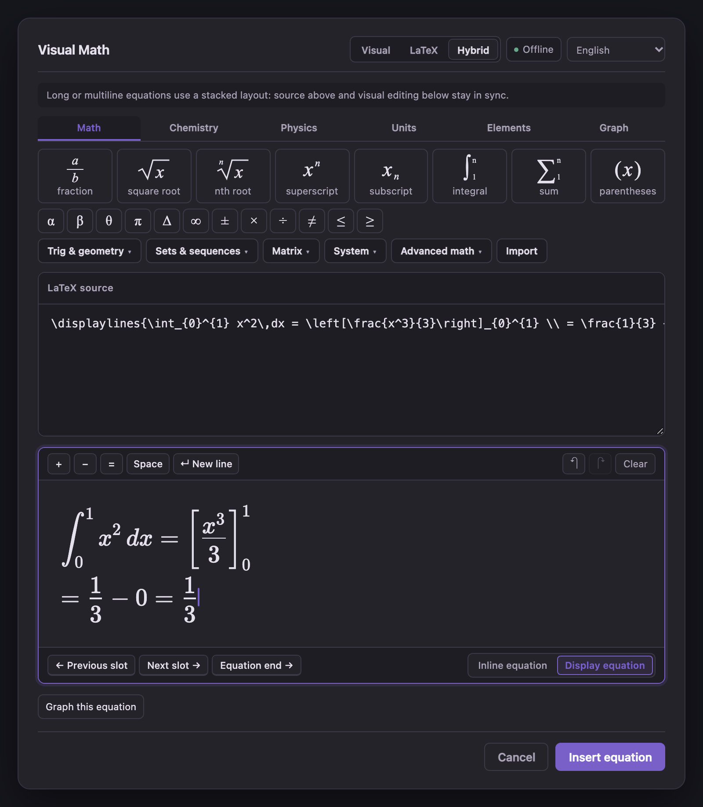
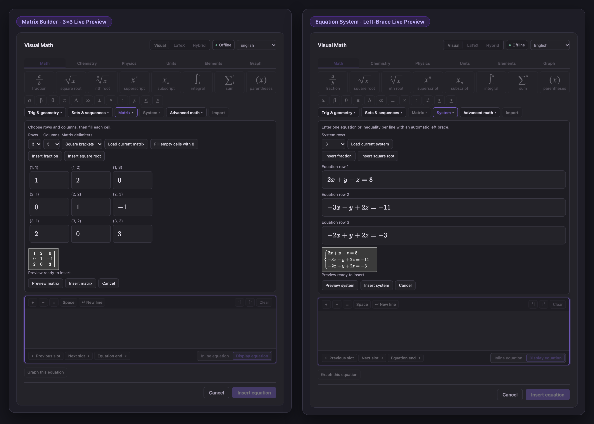
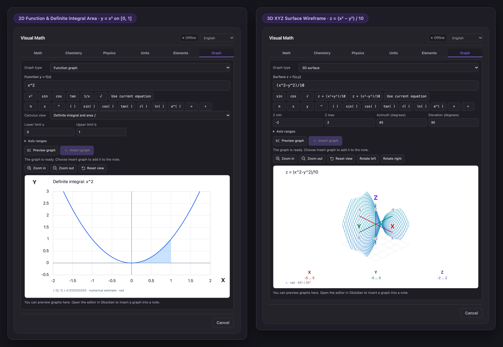
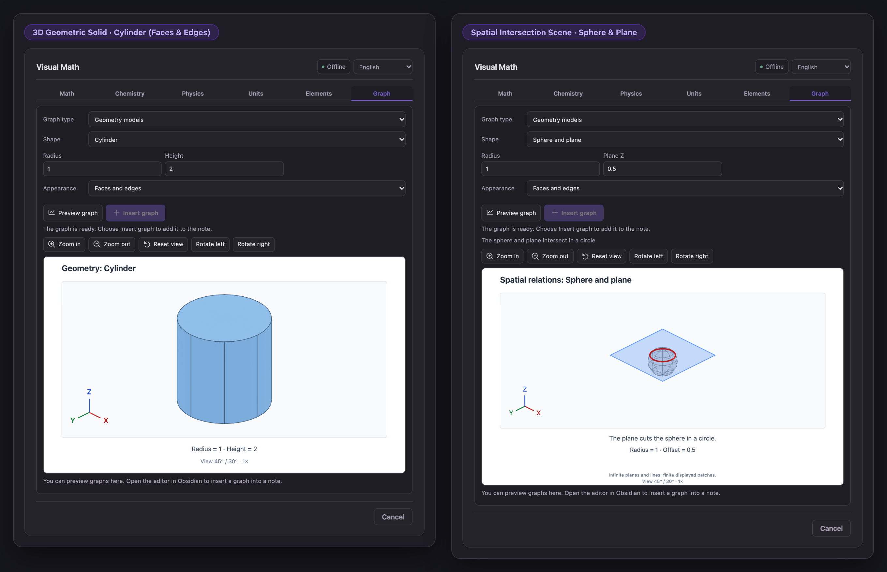
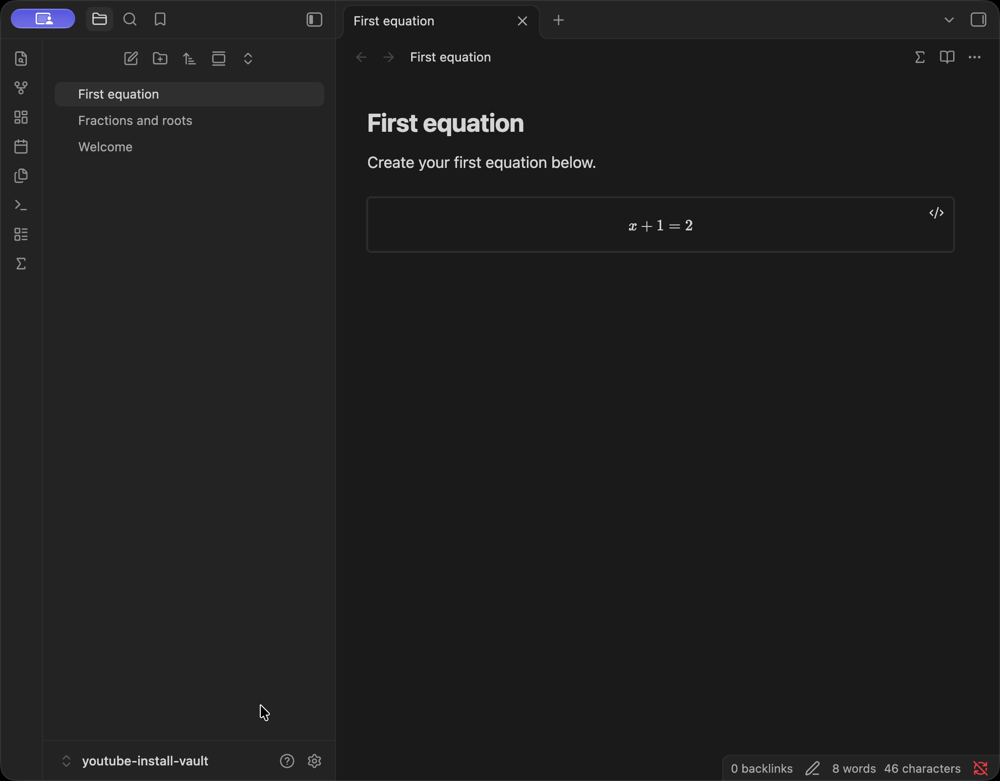

Visual · LaTeX · Hybrid
Visual, LaTeX and Hybrid equation editing
Create and reopen inline or display formulas with synchronized Visual, LaTeX, and Hybrid views, including fractions, roots, scripts, multi-line formulas, integrals, and sums.
Write equations with visual boxes, raw LaTeX, or both side by side. Build matrices, equation systems, multi-line formulas, and local 2D/3D graphs directly inside your Obsidian notes.
Obsidian 1.14.4+ · Desktop only · Local execution · By Oliver

↵ New lineCapabilities · 1.0.0 Stable
From fractions, matrices, and multi-line formulas to local 2D/3D plots, calculus, and chemistry or physics notation.
Create and reopen inline or display formulas with synchronized Visual, LaTeX, and Hybrid views, including fractions, roots, scripts, multi-line formulas, integrals, and sums.
Import large single-equation LaTeX expressions up to 120,000 characters, inspect candidate structure, and save clean source with one-wrapper protection.
Explore seven interactive geometry models and three spatial scenes (two planes, line–plane, and sphere–plane), saving dimensions, rotation, and zoom in vme-plot blocks.
Plot explicit 2D functions y = f(x), polar curves r(θ), complex-plane points, and 3D XYZ surface wireframes locally inside your notes.
Build 1–6 row and column matrices (parentheses, brackets, determinants, norms) and 2–6 equation systems, with numerical determinant and inverse helpers for 2×2–6×6 square matrices.
Insert nine higher-math templates (limits, partial and multiple integrals, products, piecewise, vectors, binomials) and 19 set, logic, and sequence tools.
Evaluate numerical derivatives, tangent lines, and definite integrals for supported real functions over finite, continuous intervals.
Write chemical equations, reversible reactions, isotopes, and 24 physics templates across mechanics, electromagnetism, relativity, and quantum notation.
Browse the built-in 118-element periodic table and convert common SI and engineering units without leaving your note.



Local-first architecture. The editor, bundled scientific reference data, and numerical graphing tools run locally inside Obsidian with no telemetry or runtime network calls.
UI languages: English · 简体中文 · Español
Overview
A quick look at visual formula editing, 2D function plotting, 3D surface wireframes, and plugin setup in Obsidian. Want full walkthroughs? Visit our official YouTube channel @VisualMathForObsidian.
Real Obsidian capture · Recorded in v0.8.2 (Current release: 1.0.0 Stable) · Visual formula editing, a 2D function graph, a 3D XYZ wireframe, and installation in Community plugins (29s, V5, optional background music). Explore the step-by-step tutorials ↓
Watch on YouTubeWorkflow
Edit structured formulas and interactive graphs directly inside your Markdown vault, with zero external accounts or cloud dependencies.
Build fractions, radicals, 1–6 matrices, 2–6 equation systems, multi-line formulas, sets, sequences and advanced templates with guided placeholders, or import single-equation LaTeX source.
Preview supported real functions from the active formula, or explore polar curves, complex-plane points, explicit XYZ wireframes, seven geometry models and three basic spatial scenes.
Numerical graphing and bounded analytic scenes within supported domains; not a general equation solver or CAD system.
Insert the equation and graph into your note as independent blocks. Choose Save view to persist graph zoom, pan or rotation adjustments.

Quick Start
Available directly in the official Obsidian Community plugins directory for desktop vaults.
Open official community directoryHands-On Guide
Open any editable Markdown note in Obsidian’s desktop main window to test the full round-trip workflow.
Click ∑ in the note header or left ribbon, then select Visual → Math → Fraction.
Type 3, press Tab, and type 4. Switch to LaTeX and append +1.
Select Hybrid to verify the synchronized LaTeX and rendered formula, then click Insert equation.
Close the note tab and reopen it. Place the cursor inside the saved equation and click ∑ to continue editing (or pick it from the formula selector).
Tutorials
Short, real-software walkthroughs covering installation, round-trip persistence, fractions, inline vs. display placement, and calculus notation.
5 step-by-step tutorials are available now (Recorded in v0.8.2). Start with lessons 01–03 in the Start Here playlist , or choose any lesson 01–05 below.
Find the correct plugin, install it and enable it in your vault.
Write a formula, insert it, then close and reopen the note.
Build structured notation with fractions and roots.
Insert inline and display formulas in one note, select the right formula in the picker, then close and reopen.
Build powers, subscripts, parentheses, sums and definite-integral notation with placeholder navigation, then save and reopen.
Release & Roadmap
Current stable capabilities and candidate themes under exploration.
Last verified: October 31, 2026
First stable desktop release in the official Obsidian Community plugins directory.
Brings synchronized Visual, LaTeX, and Hybrid formula editing together with single-equation source import, 1–6 matrices and 2–6 equation systems, higher-math and set/sequence notation, seven geometry models with three spatial scenes, local 2D/3D graphing, and built-in chemistry, physics, unit, and periodic-table tools (custom formula keywords from earlier betas were removed).
Read the 1.0.0 release notes on GitHubDiscussion areas informed by community usage. Future scope, version numbers, and dates are unscheduled exploration topics, not release commitments.
FAQ & Specifications
Have a question or a reproducible bug report?
Open an issue on GitHubNo. Visual Math is a native desktop plugin for Obsidian. This website provides documentation, real-software previews, and installation links.
Requires Obsidian 1.14.4 or later on desktop. Native release checks were verified on macOS with Obsidian 1.14.5 (targeted 1.0.0 acceptance) (and Obsidian 1.14.4 for v0.8.2 media captures). Windows and Linux have not been verified. Mobile is not supported.
No runtime account, API key, or Node.js installation is required for the compiled plugin. All editing, scientific reference tables, and graphing tools run locally. Network access is only needed when downloading or updating the plugin.
Live equation/graph preview is linked only while its editor is open. Saved formula and graph are separate blocks; navigation persists only when explicitly saved. Editing a saved equation later does not automatically overwrite a previously inserted graph. After panning, zooming, or rotating a graph, click Save view or Save graph to persist the updated state.
No. Graphing and calculus views use numerical evaluation within supported domains and finite, increasing, continuous intervals. They produce numerical approximations and are not a symbolic computer algebra system or general equation solver.
In 1.0.0, guarded single-equation import accepts single formulas up to 120,000 characters (rejecting multi-equation documents, $$...$$ blocks, and document-level preambles). Standard visual editing uses an 8,192 UTF-16 input budget and a 4,096-unit visual complexity budget; expressions exceeding the visual budget or containing custom TeX macros remain editable in source-only LaTeX mode. Custom formula keywords from earlier betas were removed in 1.0.0.
GNU GPL version 3 only with the Obsidian linking exception. Review the full licensing terms and third-party notices on GitHub.
Status: Completed · Health: Excellent · Result: Review Satisfactory (6 passed, 15 nonblocking type/CSS maintenance warnings, 0 errors). This reflects the official automated submission scan, not manual security certification.
Interface showcase screenshots are real captures from Visual Math v1.1.0. The close-and-reopen persistence still, the 29-second V5 overview video, and tutorials 01–05 are genuine captures from running Obsidian labeled Recorded in v0.8.2. Matrix determinants/inverses (`2×2`–`6×6`) and calculus tools are numerical helpers; geometry covers 7 models and 3 basic spatial relations (parallel, perpendicular, angle congruence), not a full CAD or theorem-proving engine.
Ready for Obsidian Desktop
Free and open source under GNU GPL version 3 only with the Obsidian linking exception · Obsidian 1.14.4+ · Desktop only · 1.0.0 Stable